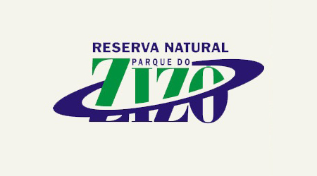
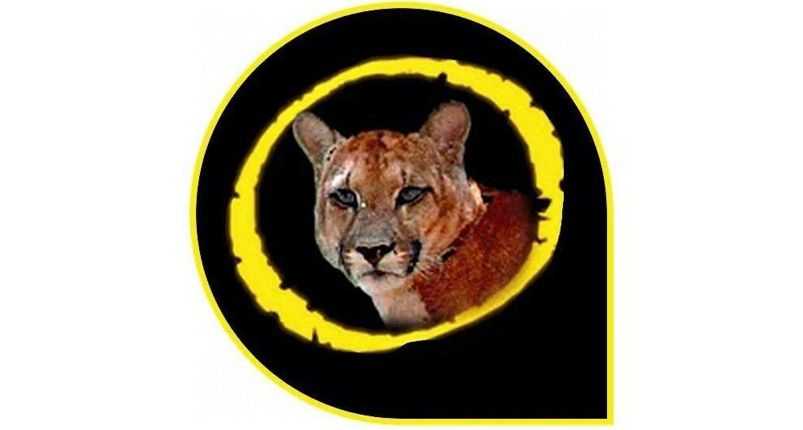

Parque Estadual Carlos Botelho
Criado através do Decreto Estadual nº 19.499, de 10/09/1982, o Parque Estadual ‘Carlos Botelho’ tem a finalidade de assegurar integral proteção à flora, à fauna e as belezas naturais, bem como garantir sua utilização a objetivos educacionais, recreativos e científicos, caracterizando-se por ser uma Unidade de Conservação de proteção integral.
O Parque oferece aos visitantes a possibilidade de percorrer trilhas com diferentes níveis de dificuldade e em meio à Mata Atlântica preservada.
Para maiores informações, entrem em contato diretamente com o PECB.
- (15) 3279-0483
- pe.carlosbotelho@fflorestal.sp.gov.br
- Facebook

Parque do Zizo
O Parque do Zizo é um projeto de conservação e educação ambiental encravado em uma reserva de Mata Atlântica primária, na região de São Miguel Arcanjo e Tapiraí, sudoeste de São Paulo.
Aqui conservamos um pedaço do paraíso e desenvolvemos atividades de ecoturismo notadamente na área de observação de aves, turismo educacional e contemplativo. O Parque é também um centro de pesquisa, aberto a parcerias com universidades e instituições interessadas em catalogar e estudar a enorme biodiversidade da Floresta Atlântica.
Venha ficar hospedado conosco, conhecer nossas trilhas e florestas riquíssimas e ajudar um pouco mais na conservação da Mata Atlântica.
- (15) 3279-1495 [Noite] | (15) 99614-7994
- reservas@parquedozizo.com.br
- Facebook

Parque da Onça Parda
O Parque da Onça Parda é uma propriedade particular voltada para a Preservação, Ecoturismo e Desenvolvimento Sustentável.
As principais atividades que podem ser praticadas em meio a essa natureza exuberante são:
- Passeios e caminhadas (Trekking)
- Cicloturismo (Bike)
- Bóia Cross
- Banhos nas Cachoeiras e Bicas
- Esportes Radicais e Corridas de Aventura
- Pesquisas científicas, cursos extra curriculares e educação ambiental
- Cursos de Permacultura e técnicas de bioconstrução
- Camping, lazer, recreação, entre outros.
- (15) 99728-1752
- parquedaoncaparda@gmail.com
- Facebook
Parque Luiz Balbone
O Parque Luiz Balbone que carinhosamente é chamado de Lagoa do Guapé é um espaço para as crianças se divertirem e apreciarem a natureza, fica localizado próximo ao centro da cidade e, neste ano de 2018, sediará o Campeonato Brasileiro de Canoagem Kayak Polo 2018 e também a SELETIVA NACIONAL para o CAMPEONATO MUNDIAL DO CANADÁ.
Paróquia Santuário São Miguel Arcanjo
A Igreja Matriz da Paróquia São Miguel Arcanjo foi elevada a Santuário Diocesano dia 21 de Setembro de 2013.
Nosso Santuário está de portas abertas para acolher você, peregrino e romeiro, que deseja manifestar sua fé, louvor, ação de graças e súplica a Deus pela intercessão de São Miguel Arcanjo.